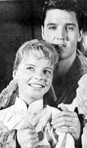
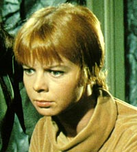
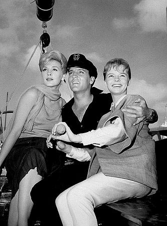

|
por Rosimeire Anne
 Qual a ligao entre a ordenana Colt e Elvis Presley? A resposta Laurel Goodwin. A atriz foi imortalizada no mundo do entretenimento por ter contracenado com o Rei do Rock em "Girls! Girls Girls!", filme de 1962, mas o resto de sua carreira no lhe proporcionou muito reconhecimento. Entre os fs de
Jornada nas Estrelas, Goodwin conhecida como a recatada mas sexy ordenana do capito Christopher Pike no piloto
"The Cage".
Goodwin nasceu no dia 11 de agosto de 1942, em Wichita, Kansas. Ela comeou trabalhando como modelo infantil aos sete anos e na adolescncia decidiu seguir a carreira de atriz. Mudou para San Francisco, Califrnia, onde fez o colegial na Lowell High School e cursou a Universidade Estadual de San Francisco.
No seu ano de caloura, seu professor a aconselhou a fazer um trabalho de vero em Shasta, Califrnia, e em suas horas livres, ela acabou virando bab dos filhos do cinematografista Kurt Gunther. Em retribuio, ele tirou algumas fotos dela e as enviou para o departamento de publicidade da Paramount, onde ele trabalhava. Laurel foi convidada para uma audio e tornou-se uma atriz contratada em 1962.
Ela foi notada pelo produtor Hal Wallis e chamada a fazer parte do elenco do filme "Girls! Girls! Girls!", como a "garota legal" rivalizando pelo corao do Rei do Rock com a lder feminina Stella Stevens. Ela recebeu boas crticas por sua estria e outros personagens de filmes se seguiram; em "Papas Delicate Condition" ela fez a filha mais velha de Jackie Gleason e em "Stage To Thunder Rock" trabalhou ao lado de atores veteranos como Barry Sullivan, John Agar e Lon Chaney Jr.
O terceiro e ltimo filme de Goodwin foi o western de autoria de Sam Peckinpah e dirigido por Arnold Laven, "The Glory Guys", onde ela teve a chance de aprender com um ento promissor ator (e hoje estrela reconhecida), James Caan. Entretanto, nessa poca, metade dos anos 60, a produo de filmes estava caminhando vagarosamente para uma fase de retrao e no havia muito demanda para atrizes do tipo de Goodwin.
 Sua carreira posterior foi confinada televiso, onde ela interpretou vrios papis, mudando de personagens ingnuas para garotas hippies voluptuosas, como nas sries "Virginian", "Mannix", "Get Smart", e "The Beverly Hillbillies", no fim dos anos 60. Logo depois, ela acabou conquistando uma vaga em
Jornada nas Estrelas para o primeiro piloto da srie. Originalmente, ela deveria ser uma personagem fixa da tripulao, mas quando a rede de televiso NBC exigiu a troca de boa parte do elenco, sua personagem acabou excluda da srie (um papel semelhante seria exercido pela atriz Grace Lee Whitney, mas at essa nova ordenana no sobreviveria mais que 13 episdios).
Aps perder um papel no filme "Gidget" por ser muito alta, Goodwin acabou por gradualmente abandonar a carreira de atriz, apesar de ter feito alguns comerciais posteriormente.

Desde 1970, ela casada com o diretor de filmes William Wood, e juntos os dois tm se envolvido na produo de vrios filmes de longa-metragem, incluindo "Stroker Ace".
Filmografia
1965 - The Glory Guys - Beth Poole
1964 - Stage to Thunder Rock - Julie Parker
1963 - Papas Delicate Condition - Augusta Griffith
1962 - Girls! Girls! Girls! - Laurel Dodge
Sries de TV e telefilmes
1967 - Mannix, no episdio "A Question of Midnight" - Andrea
1966 - Jornada nas Estrelas, em "The Menagerie" -
Ordenana J.M. Colt
1965 - Get Smart, no episdio "Anatomy of a Lover" - Phoebe
1965 - Jornada nas Estrelas, em "The Cage" - Ordenana J.M. Colt
1962 - The Beverly Hillbillies, no episdio "Robin Hood and the Sheriff" - Stella
1962 - The Beverly Hillbillies, no episdio "Robin Hood of Griffith Park" - Stella
1962 - The Virginian, no episdio "A Gallows for Sam Horn" - Peg Dineen
|